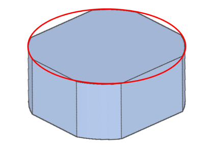
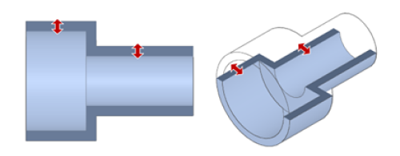
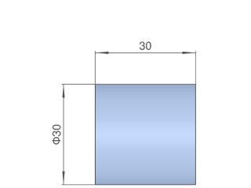
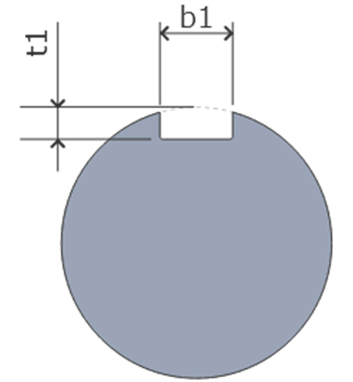
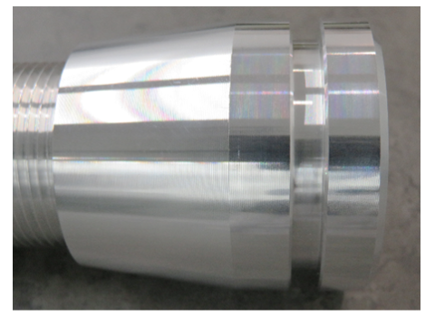
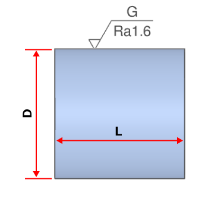
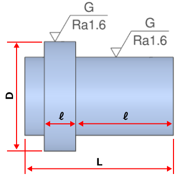
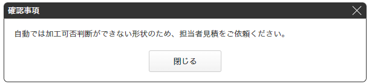

切削（丸物）
丸棒素材を旋盤（旋削）中心に加工する回転対称部品サービス。シャフト・ピン・スリーブ・カラー・ブッシュなどが対象。 材質31・表面処理12・熱処理（焼入れ）対応。最短1日目出荷の超短納期、研削・研磨やクリーン洗浄・レーザ刻印にも対応します。
対応形状・認識条件
切削サービスでは丸物・角物を自動判定します。最外径に円筒部があれば「切削丸物」として認識されます。

自動見積もり可能な形状
認識上の注意（外径・内径・穴）
| 要素 | 認識される条件 | 外れた場合 |
|---|---|---|
| 外径・内径 | 中心軸上にある | 中心軸上にない外径＝対象外形状／内径＝穴として認識 |
| 円筒側面穴 | 中心軸に向いている | 向いていない穴は「その他穴」＝自動見積もり対象外（コメント欄に穴情報を記入） |
| おねじ（外径） | 外径の自動認識は非対応。画面上で指定 | |
対象外形状（発注後に形状変更相談の可能性あり）
下記は自動見積もりが成功するケースがあっても、発注後に形状変更をご相談する場合があります。
対応材質・サイズ（31材質）
材質別の対応サイズ（外径D・全長L）
自動見積もり領域のサイズです。外径Dと全長Lの組合せで可否が変わります（次表の包絡を参照）。 金属は基本 ø3〜ø500・L2〜5000mm の範囲内、樹脂は材質ごとに外径上限が異なります。
| 区分 | 材質（質別） | 外径D | 全長L | 短納期/超短納期の条件・備考 |
|---|---|---|---|---|
| 鉄・鋼 | S45C／SS400／SCM435／SKS3／SKD11／SUJ2 | ø3〜500 | 2〜5000mm | 超短納期は1日目〜（標準6日目〜） |
| SCM440／SKD61 | ø10〜500 | 2〜5000mm | SKD61は標準9日目〜・超短納期対象外 | |
| ステンレス | SUS303／SUS304／SUS316 | ø3〜500 | 2〜5000mm | 超短納期1日目〜 |
| SUS316L／SUS440C | ø3〜500 | 2〜5000mm | SUS316Lはø20以下で短・超短納期可／SUS440Cは超短納期対象外 | |
| アルミ | A2017[T4]／A5052[H32･H34･H112]／A5056[H34･H112]／A6061[T6]／A7075[T6511] | ø3〜500 | 2〜5000mm | 質別の指定不可。A7075は超短納期対象外 |
| 銅・真鍮 | C3604-LCd（快削真鍮） | ø3〜500 | 2〜5000mm | 標準9日目〜。ø100以下で短納期可・超短納期は今後対応 |
| 樹脂 | POM／MCナイロン（青・黒灰）／ABS／PPS／PVC | ø3〜（材質規定） | 2〜5000mm | 超短納期1日目〜（一部材質は今後対応） |
| MCナイロン（アイボリー） | 〜ø200 | 2〜5000mm | 標準8日目〜・短納期4日目〜 | |
| アクリル／PC／PP／PEEK／超高分子量PE／PTFE／ユニレート | アクリル〜ø80／PC・PP〜ø150／PEEK・超高分子量PE〜ø100 | 2〜5000mm | PC・PPはø150以下、PEEK・超高分子量PEはø100以下で短納期可 |
外径D × 全長L の自動見積もり包絡（金属の目安）
同じ材質でも、径と長さの組合せで対応可否が変わります。大径は長尺になるほど、また細径(ø10以下)も長尺は対象外です。
| 外径D | 自動見積もりの全長L上限（目安） |
|---|---|
| 3 ≦ D ≦ 10 | 〜200mm |
| 10 < D ≦ 140 | 〜5000mm |
| 140 < D ≦ 200 | 〜1000mm |
| 200 < D ≦ 250 | 〜200mm |
| 250 < D ≦ 300 | 〜100mm |
| 300 < D ≦ 500 | 自動見積もり対象外（担当者見積） |
材料の特性
下記特性値は参考値であり保証値ではありません。
鉄・鋼の特徴と代表値
| 材質 | 引張強さ(N/mm²) | 比重 | 特徴 |
|---|---|---|---|
| SS400 | 400〜510 | 7.87 | 一般構造用圧延鋼材。低コスト・加工良好。引張400N/mm²以上が名称由来 |
| S45C | 570〜750 | 7.87 | 炭素約0.45%の構造用炭素鋼。焼入れで強度・耐摩耗性向上。シャフト・ギア・ピン |
| SCM435 | 900〜1050 | 7.85 | Cr-Mo合金鋼。高強度・高靭性。高強度ボルト・シャフト |
| SCM440 | 950〜1100 | 7.85 | 高強度・高靭性。焼入れで強化。自動車・機械部品 |
| SKS3 | 1000〜1300 | 7.85 | 冷間加工用合金工具鋼。高硬度・高耐摩耗。せん断刃・ダイス・ゲージ |
| SKD11 | 1800〜2000 | 7.8 | 合金工具鋼。高硬度・高耐摩耗、比較的高耐食。金型・治具・ゲージ |
| SKD61 | 1200〜1400 | 7.73 | 熱間ダイス鋼（Cr-Mo-V）。高温強度・耐熱疲労・寸法安定性 |
| SUJ2 | 1570〜1960 | 7.8 | 高炭素クロム軸受鋼。非常に高硬度・高耐摩耗。ベアリング・精密部品 |
アルミの特徴と代表値
| 材質 | 引張強さ(N/mm²) | 比重 | 特徴 |
|---|---|---|---|
| A2017 | 390〜500 | 2.79 | ジュラルミン。切削性と強度。銅含有で耐食性はやや劣る。航空機・車両 |
| A5052 | 210〜265 | 2.68 | 成形性・溶接性・耐食性に優れる。中程度強度で流通量が多い一般材 |
| A5056 | 290〜350 | 2.66 | Mg多含有。耐食性・強度・溶接性。丸棒材として広く流通 |
| A6061 | 260〜310 | 2.7 | 耐食性トップクラス。T6処理で高強度。海水・屋外環境に最適 |
| A7075 | 510〜580 | 2.8 | 超々ジュラルミン。アルミ最高クラスの強度。軽量化＋高強度用途 |
ステンレスの特徴と代表値
| 材質 | 引張強さ(N/mm²) | 比重 | 特徴 |
|---|---|---|---|
| SUS303 | 520〜750 | 7.93 | 切削性向上のオーステナイト系。複雑形状向き。耐食・溶接性はSUS304に劣る |
| SUS304 | 520〜750 | 7.93 | 汎用性が高い。高耐食・高強度・優れた溶接性 |
| SUS316 | 520〜700 | 7.98 | SUS304より耐食・耐孔食性向上。沿岸部・潮風環境 |
| SUS316L | 480〜680 | 7.98 | 低炭素で耐粒界腐食性が高い。海水など高耐食用途 |
| SUS440C | 1900〜2100 | 7.7 | ステンレス中で最高硬度。焼入れで高硬度・耐摩耗。ベアリング・金型部品 |
銅・真鍮／樹脂の特徴
- C3604-LCd（真鍮・黄銅）
- 引張335〜540N/mm²、比重8.43。切削抵抗が少なく切粉が分断される。精密部品向き。変色・錆び・傷に注意
- POM（ポリアセタール）
- 機械強度・耐摩耗・耐薬品性が高い。吸水性が低く長期の寸法安定性に優れる。連続使用95〜100℃
- MCナイロン
- 機械強度・耐摩耗性に優れる。吸水性が高く寸法安定性に劣る。耐候・帯電防止・導電グレードあり。連続使用120℃
- PEEK
- 熱可塑性樹脂で最高レベルの耐熱・機械強度。連続使用250〜260℃。非常に高価
- PPS
- 耐熱・寸法安定・耐薬品。PEEKに近い耐熱で低価格。連続使用220℃
- 超高分子量PE
- 低比重・高耐摩耗・滑り特性。線膨張係数が大きく寸法安定性が悪い。バリ除去しにくい
- ふっ素（PTFE）
- 耐熱・耐薬品・摺動性が非常に高い。硬度が低くバリが出やすい。連続使用260℃
表面処理（12種）
○＝優、△＝中、×＝なし／劣。鉄鋼系・アルミ系・SUS系で対応処理が分かれます。
| 表面処理 | 耐食性 | 耐摩耗性 | 硬度 | 装飾性 | 導電性 | 主な対象 |
|---|---|---|---|---|---|---|
| 無電解ニッケルメッキ | ○ | ○ | ○ | △ | ○ | 鉄鋼・複雑形状に均一被膜 |
| 四三酸化鉄皮膜（黒染め） | △ | × | × | △ | ○ | 鉄鋼・低コスト防錆 |
| 三価クロメート（白） | △ | × | × | △ | ○ | 鉄鋼 |
| 三価クロメート（黒） | △ | × | × | △ | ○ | 鉄鋼 |
| 硬質クロム（フラッシュ） | ○ | ○ | ○ | ○ | △ | 鉄鋼・摺動部（HV700〜1000） |
| 低温黒色クロム | ○ | △ | △ | ○ | ○ | 鉄鋼・被膜割れ少 |
| パーカー処理 | △ | △ | △ | × | × | 鉄鋼・塗装下地（SKD11/61は対象外） |
| イソナイト（塩浴軟窒化） | ○ | ○ | ○ | × | × | 鉄鋼・低変形（570〜590℃） |
| 白アルマイト | ○ | △ | △ | ○ | × | アルミ・銀白色 |
| 黒アルマイト（つや消し含む） | ○ | △ | △ | ○ | × | アルミ・装飾／光学 |
| 硬質アルマイト（白） | ○ | ○ | ○ | △ | × | アルミ・高硬度／潤滑 |
| 不動態化処理 | ○ | × | × | △ | ○ | SUS・耐食向上 |
| アロジン処理相当（三価クロム化成） | ○ | × | × | △ | ○ | アルミ・導電性あり（RoHS適合） |
※熱処理／バフ研磨を指定した場合、電解研磨は対応不可。
熱処理（焼入れ）
ズブ焼入れ・真空焼入れ・高周波焼入れに対応します（全体焼入れ＝ズブ／真空、部分焼入れ＝高周波）。指示がない場合は生材で提供します。
材質別の対応可否と標準硬度
| 材質 | ズブ／真空（全体）標準硬度 | 高周波（部分）標準硬度 | 自動見積可能範囲(HRC) |
|---|---|---|---|
| S45C | HRC40〜45 | HRC52〜58 | 30〜45（高周波は52〜58） |
| SCM435 | HRC35〜40 | HRC52〜58 | 30〜45 |
| SCM440 | HRC50〜55 | HRC52〜58 | 30〜55 |
| SKS3 | HRC58〜63 | HRC58〜63 | 40〜63 |
| SKD11 | HRC58〜63 | 高周波対応不可 | 50〜63 |
| SKD61 | HRC50〜55 | — | 40〜55 |
| SUJ2 | HRC58〜63 | HRC57〜63 | 35〜63 |
| SUS440C | HRC58〜63 | 高周波対応不可 | 45〜63 |
| SS400／アルミ全般／SUS303・304・316・316L／C3604 | × 焼入れ対応不可 | ||
焼入れ対応サイズ（標準納期）
| 種別 | 外径D | 全長L |
|---|---|---|
| 全体焼入れ（ズブ／真空） | 3≦D≦300 | 2≦L≦300 |
| 部分焼入れ（高周波） | 6≦D≦300 | 5≦L≦300 |
イソナイト処理と焼入れを併用すると、標準硬度とは異なる仕上がりになります（参考：イソナイト処理後の表面硬度はS45CでHRC45.3〜57.8、SKD11でHRC67.0〜72.7）。
設計ガイドライン（形状・モデリングルール）
製造は3D CADデータが正ですが、加工上、以下の場合は3Dモデルと仕上がりに差異が生じます。
角部・円筒隅部・面取り（C/R0.5ルール）
| モデル形状 | 仕上がり |
|---|---|
| 角部 C/R0.5未満 | C/R0.1〜0.4mm または糸面取り |
| 角部 C0.5／R0.5以上 | 3Dデータ通りに加工 |
| 円筒隅部 0.5未満（逃げ溝なし） | R0〜R0.4mm（工具刃先R0.4の仕上がり） |
3Dモデル径とねじ呼び径の差異
モデル径を基準にISO規格に準じたねじ加工を行うため、モデルと形状が変わります。
- めねじ（M10指定）
- 下穴径ø8.3で加工。モデルのø10とは異なる形状になります
- おねじ（M10指定）
- 外径ø10から加工。モデルのø9とは異なる形状になります
不完全ねじ部の推奨値（満たさない場合はミスミ推奨値で加工）
| 項目 | おねじ／逃げ溝なし | めねじ／逃げ溝あり |
|---|---|---|
| 不完全ねじ部長さ・逃げ溝幅の下限 | ピッチ×2.0 | ピッチ×2.5＋2 |
| ねじ部長さ／深さの下限 | ピッチ×2.0 | ピッチ×2.0 |
| 逃げ溝深さ最小値 | ピッチ×0.75 | ピッチ×0.75 |
C面はバリの出ないよう面取り加工。逃げ溝深さをピッチ×0.75以下にするとねじ跡が残ります。
穴底のドリル先端形状
穴（旋削・切削）の底面にはドリル先端形状が残ります。内径Dとモデル深さの比（深さ÷内径）で仕上がりがA（1mm以上の底面フラット確保）／B（底面フラットなし）に分かれます。
| 内径D | 3D以下 | 3D超〜5D以下 | 5D超〜10D以下 |
|---|---|---|---|
| D≦ø6 | B | B | B |
| ø6＜D≦ø30 | A | B | B |
| ø30＜D | A | A | A |
例：内径ø10・モデル深さ35 → 35÷10＝3.5D ＝ B。底面フラット希望はコメント記載で可否確認。
薄肉・薄板・ツバの判定ロジック

| 項目 | 条件 | 閾値（これ以下は要注意） |
|---|---|---|
| 残り肉厚① | 最外径ø10以下 | 0.5以下 |
| 残り肉厚① | 最外径ø10超 | 1.0以下 |
| 残り肉厚②③ | — | 1.0以下／1.0未満 |
| 薄板 | ø60以上 | 全長が外径の5%未満は反りが発生（例：ø60→3mm、ø100→5mm） |
| ツバの厚み | — | 1mm未満は見積不可（1mm以上で自動見積可） |
モデル体積（除去率）の閾値
モデル体積が素材体積（最外径半径²×π×全長）に対して以下の割合未満になると変形の恐れがあります。
| 条件 | モデル体積の閾値 |
|---|---|
| 鉄/鋼・SUS | 5%以上 |
| アルミ・銅・樹脂 | 10%以上 |
| 全材質（内径除去率40%超 かつ 外径除去率40%超） | 15%以上 |
| 全材質ø30超（内径除去率70%超） | 20%以上 |
3D画面での寸法表記・小数桁ルール
3Dビューワーに表示された寸法値を正として加工します。最終桁を四捨五入し、公差により表示桁数が変わります。

| 公差 | 表示桁数 |
|---|---|
| 一般公差 ／ ±0.1 ／ ±0.05 | 0.00（小数2桁） |
| はめ合い公差 | 0.000（小数3桁）※全長・追加寸法には付与不可 |
ねじ設定時のピッチは並目は非表示、細目は表示。最外径精度あり例：ø30 g6 (-0.007/-0.02)。
ねじ・キー溝・穴・ポケット規格
おねじ・めねじ（mm）下穴径の例
呼び径ごとにモデル径の範囲と自動見積可否が定義されます（○＝自動見積可、●＝タップ(MC穴)可、△＝品質同意で可、✖＝不可）。下穴径＝めねじのモデル径下限が目安です。
| 呼び径 | おねじ モデル径(ø) | めねじ／タップ モデル径(ø) | 並目ピッチ |
|---|---|---|---|
| M3 | 2.6〜3 | 2.4〜3 | 0.5 |
| M5 | 4.4〜5 | 4.1〜5 | 0.8 |
| M6 | 5.3〜6 | 4.9〜6 | 1.0 |
| M8 | 7.1〜8 | 6.6〜8 | 1.25 |
| M10 | 9〜10 | 8.3〜10 | 1.5 |
| M12 | 10.8〜12 | 10.1〜12 | 1.75 |
| M16 | 14.7〜16 | 13.8〜16 | 2.0 |
対応表にないねじは非対応。めねじ＝中心軸上にある旋盤対応ねじ、タップ穴＝中心軸上にないMC対応ねじ。管用テーパねじはISO規格（JIS B 0203）基準で加工、ゲージ検査で合否判定。インサート穴はアルミ・樹脂で対応（インサート材質SUS304、呼び長さ0.5D／1D／1.5D／2D）。
キー溝の認識条件とはめ合い
JIS規格（B 1301:1996）と一致するキー溝には自動で公差が設定されます（b1/b2＝2〜32mm）。
| 区分 | 規格一致 | 規格不一致 |
|---|---|---|
| 外径キー溝（b1） | 外径キー溝・はめ合い公差「自動」 | 長穴扱い・はめ合い公差「手動」 |
| 内径キー溝（b2） | 内径キー溝・はめ合い公差「自動」 | 「一般公差」扱い・公差選択不可 |

代表的なキー寸法（JIS）：b=2 → P9(-0.006/-0.031)・t1=1.2(+0.1/0)、b=8 → P9(-0.015/-0.051)・t1=4.0(+0.2/0) など。
精度穴・皿穴・ポケット・長穴
精度穴＝穴径公差にはめ合い／両側／片側公差を指定したストレート穴。自動見積可能な精度範囲は径区分ごとに定義されます。
| 径（mm） | はめ合い | 両側公差 最小値 | 片側公差 最小レンジ |
|---|---|---|---|
| 〜3 | IT7級以上 | 0.005 | 0.01 |
| 3〜6 | IT7級以上 | 0.006 | 0.012 |
| 6〜10 | IT7級以上 | 0.008 | 0.015 |
| 10〜18 | IT7級以上 | 0.009 | 0.018 |
| 30〜50 | IT7級以上 | 0.013 | 0.025 |
| 80〜120 | IT7級以上 | 0.018 | 0.035 |
皿穴の認識：皿角度90°、d≧3.0mm、D>1.4d（d≧4.0mm）／D>1.7d（d<4.0mm）。ポケット・長穴の対応長さℓは、マイナス溝ℓ≧0.5mm、その他ポケット／長穴・キー溝ℓ≧2mm（公差レンジ0.04〜は長穴・キー溝ℓ≧3mm）。
止め輪（C形止め輪 溝幅推奨値）
| t：止め輪幅 | m：3Dモデルに必要な幅 | 隅R |
|---|---|---|
| 1.0 | 1.15 | R0.1以下 |
| 1.5 | 1.65 | R0.15以下 |
| 2.0 | 2.2 | R0.2以下 |
| 3.0／4.0 | 3.2／4.2 | R0.2以下 |
規格は軸用／穴用C形止め輪（JIS B 2804:2010）。小径向けE形止め輪規格は非対応。
六角穴
対辺距離2〜8mmで仕上り形状が分かれます。対辺距離6mm未満かつ規格に記載がない場合は自動見積対象外（例：5.5mmは対象外）。対辺距離の公差はJIS B 1176準拠、六角穴部に代表面粗さは適用されません。
公差・精度
指示なき寸法の普通許容差（標準）
3D CADアップロード段階では径情報と全長以外の寸法・公差は表示されません。指示なき場合は原点を加工基準に以下を適用します（JIS B 0405:1991／JIS B 0419:1991より抜粋、meviy規格は5000mmまで保証）。
| 等級 | 0.5〜3 | 3超〜6 | 6超〜30 | 30超〜120 | 120超〜400 | 400超〜1000 | 1000超〜2000 | 2000超〜5000 |
|---|---|---|---|---|---|---|---|---|
| m（中級） | ±0.1 | ±0.1 | ±0.2 | ±0.3 | ±0.5 | ±0.8 | ±1.2 | ±2 |
面取り部の長さ（C・R）：0.5〜3は±0.2、3超〜6は±0.5、6超は±1（粗級）。角度公差：辺長10以下±1°、50超120以下±20′ など。直角度の普通公差：100以下0.4、300超1000以下0.8mm 等。
指定可能なはめ合い公差
| 加工種 | 金属 | 樹脂 |
|---|---|---|
| 旋盤 | IT6級〜 | IT7級〜 |
| MC（二次加工） | IT7級〜 | IT7級〜 |
指定可能な寸法公差（最小公差・レンジ）
| 部位 | 区分 | 最小公差例 | レンジ |
|---|---|---|---|
| 全長・長さ（金属） | L,ℓ≦200 | ±0.02 | 0.04 |
| 全長・長さ（金属） | 200〜500 | ±0.05 | 0.1 |
| 全長・長さ（金属） | 500〜2000 | ±0.2 | 0.4 |
| 全長・長さ（樹脂） | L,ℓ≦100 | ±0.05 | 0.1 |
| 溝外径D | 一律 | ±0.02 | 0.04 |
| 溝幅w（外径） | 一律 | ±0.05 | 0.1 |
| 溝内径d | — | ±0.05 | 0.1 |
| 溝幅w（内径） | — | ±0.07 | 0.14 |
幾何公差
平面度・平行度・直角度・真円度・同軸度・真直度・円筒度・円周振れ・全振れに対応（公差値0.01〜0.1）。穴・キー溝・切り欠き・内径溝・端面溝には指定できません。
例1）ø100 公差なし → 真円度0.1／ 例2）ø100 ±0.02 → 真円度0.04。
旋盤加工の幾何公差精度基準（焼入れも保証、薄肉・長尺・除去率大は除く）：直角度・平行度はL≦100で0.06、同軸度はL≦100で0.1（mm）。樹脂は温度管理（23〜24℃）環境で検査し、出荷時点の検査結果で精度保証。片側＝一方向加工で完結、両側＝ワーク付け替えで2方向加工のため精度が異なります。
外観品質・研削研磨・付帯サービス
外観の品質保証範囲

材質・サイズによっては素材面（磨き・圧延）で出荷する場合あり。カッターマーク・加工方法（切り落とし／突っ切り／ワイヤーカット）の指定はできません。
研削・研磨
研削（G）・バフ研磨（SPBF）に対応。粗さ区分Ra6.3／3.2／1.6／0.8／0.4。


| 研削対応サイズ | 外径D | 全長L／長さℓ |
|---|---|---|
| 外径研削 | 3≦D≦8 | 50≦L≦150／12≦ℓ |
| 外径研削 | 8＜D≦100 | 50≦L≦300／12≦ℓ |
| 平面研削 | 10≦D≦200 | 厚さ5≦T≦50 |
| 内面研削 | 3≦d≦30 | ℓ≦d×3倍 |
バフ研磨：長さ12≦ℓ≦100、重量W≦2.5kg。隣接面にもバフが当たり外観が変化する場合あり。
クリーン洗浄
脱脂洗浄・精密洗浄・電解研磨＋精密洗浄の3方式。1個あたり1辺最大1,500mm、重量上限40kg（脱脂）／60kg（精密・電解研磨）。
| 方式 | 用途 | 梱包 |
|---|---|---|
| 脱脂洗浄（SL-） | 一般環境（通常組立等） | 無添加ポリエチレンシート1重 |
| 精密洗浄（SH-） | クリーン環境（液晶・車載カメラ等） | 無添加ポリエチレンシート脱気2重 |
| 電解研磨＋精密洗浄（SHD-） | 真空・クリーン環境（半導体前工程等） | 無添加ポリエチレンシート脱気2重 |
電解研磨＋精密洗浄はアルミ・SUS・SUS440C・C3604（一部）など「なし」材が中心で、表面処理品の多くは対象外。熱処理・バフ研磨指定時は電解研磨不可。洗浄により防錆油も除去され未洗浄品より錆びやすくなる場合あり。
刻印（レーザマーキング）
- 最大ワークサイズ
- 円筒方向 L300mm×ø115／端面方向 L115mm×ø300
- 位置
- 円筒面・平面に指示可。角度は45degピッチ（0〜360deg、目安値）
- 文字
- 半角英数字＋一部記号（+-.#$%&()=*:?/_~ø）。改行・スペース可。フォント・文字間隔指定不可
- 文字サイズ
- 3〜15mm（1mmピッチ）／17.5〜30mm（2.5mmピッチ）。寸法・角度精度は保証外
品質管理・検査
標準検査：内径・外径はマイクロメーター、長さはノギス、はめ合いは限界栓ゲージ／ピンゲージ、おねじ・めねじはISO2級相当ボルト・ナットの通り、外観は粗さ標準片・ドットゲージ・粗さ測定器。幾何公差は偏心測定器・真円度測定機・三次元測定機等（検査方法・検査表添付は指定不可）。表面処理のない鉄/鋼材や黒染め品には防錆油を塗布して出荷します。
出荷日・納期・割引
締め時間内の注文で翌営業日から1日目カウント（土日祝非カウント）。熱処理を選択可、指示なき場合は生材。
納期選択肢
| 納期 | 出荷日 | 対象（標準納期比） | 型番末尾 | 締め時間 |
|---|---|---|---|---|
| 超短納期 | 1日目〜 | ø63×全長200mm以下 | -R | 12:30 |
| 短納期 | 3日目〜 | ø200×全長200mm以下 | -E | 15:00 |
| 標準納期 | 6日目〜 | 標準 | — | 20:00 |
| 長納期 | 20日目〜 | 原則全商品（1個30%OFF／2〜200個10%OFF） | -L | 20:00 |
材質別 標準出荷日（なし表面処理）
| 材質 | 標準 | 超短納期 | 短納期 | 長納期 |
|---|---|---|---|---|
| 鉄/鋼（S45C等） | 6日目〜（SKD61は9日目〜） | 1日目〜（SCM440/SKD61/SUJ2は対象外） | 3日目〜（SKD61は対象外） | ＋14日 |
| アルミ | 6日目〜 | 1日目〜（A7075は対象外） | 3日目〜 | ＋14日 |
| SUS303/304/316/316L | 6日目〜 | 1日目〜 | 3日目〜 | 20日目〜 |
| SUS440C | 6日目〜 | 対象外 | 3日目〜 | 20日目〜 |
| 真鍮 C3604 | 9日目〜 | ×（今後対応予定） | 5日目〜（ø100以下） | ＋14日 |
| 樹脂（POM等） | 6日目〜（一部8日目〜） | 1日目〜（一部×） | 3日目〜（一部×） | ＋14日 |
表面処理の加算日数例：無電解ニッケル・黒染め＋1日、硬質クロム・三価クロメート＋2日、イソナイト・低温黒色クロム＋4日、パーカー処理＋5日（SKD11/61は対象外）。熱処理加算例：S45C 標準6日＋熱処理3日＝9日目。
大口（数量スライド）割引
| 数量 | 最外径ø16以下 | 最外径ø16超 | 加算日数 |
|---|---|---|---|
| 2〜10 | 30%OFF | 30%OFF | +0日 |
| 11〜30 | 40%OFF | 35%OFF | +0日 |
| 31〜50 | 50%OFF | 40%OFF | +0日 |
| 51〜100 | 60%OFF | 60%OFF | +3日 |
| 101〜200 | 70%OFF | 70%OFF | +5日 |
| 201〜 | 担当者見積（時間がかかります） | ||
長納期割引（1個30%OFF・2個以上10%OFF）と併用可。例：1個10,000円→長納期7,000円。クリーン洗浄は全納期＋4日加算。
よくある見積もりエラー

| 事例 | 原因 | 対処 |
|---|---|---|
| ポケット隅部 | 隅部のピン角はエンドミルで加工不可 | 工具Rを考慮したRモデリング（例：幅2〜3mm深さ6→R1、幅20以上深さ80→R10） |
| ポケット根元R | 根元RがあるとエンドミルNG | 根元Rはモデリングしない |
| 薄肉 | 肉厚が薄く一般公差含む精度保証ができない | 肉厚を修正（薄肉判定ロジック参照） |
| 薄板 | ø60以上で全長が外径の5%未満は反る | 板厚を外径×5%以上に（ø60→3mm、ø100→5mm） |
| ツバの厚み | ツバ厚1mm未満 | 1mm以上に修正 |
| 対象外形状 | ねじモデリングがあると対象外形状と認識 | ねじはモデリングせず、画面上でおねじ・めねじを指定 |
| その他穴 | C/R面取り・45°以外の面取り・テーパ穴・先細り二段穴・内径や外径溝にかかる穴は「その他穴」 | 形状を修正、またはコメント欄に穴情報を記入 |
| 形状認識失敗 | 3D CADデータの品質問題で読込時に形状が変形（「モデルにエラー形状が存在します」等） | 形状確認・修正、別形式（STEP／Parasolid）で再アップロード |